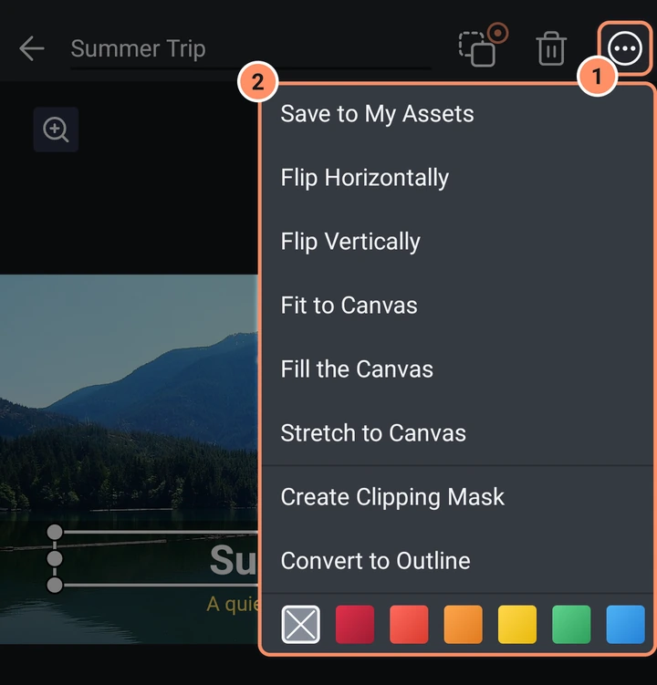
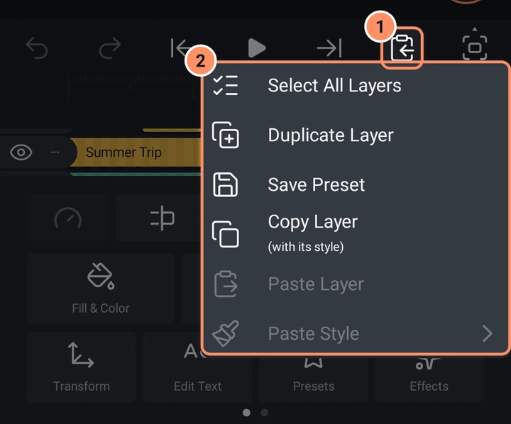
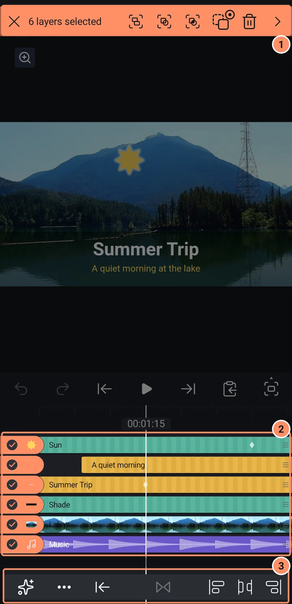
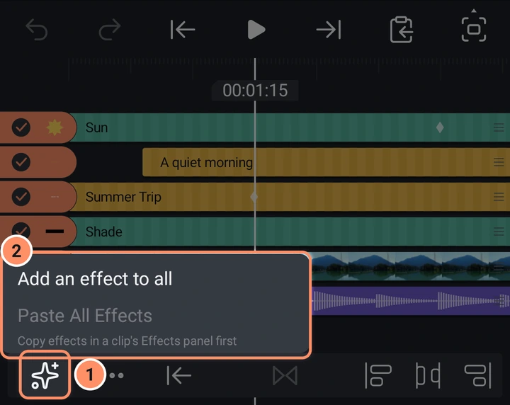
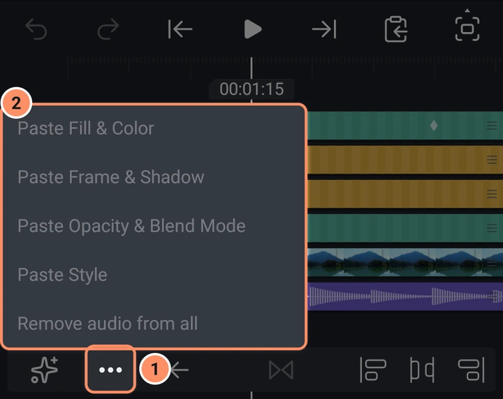
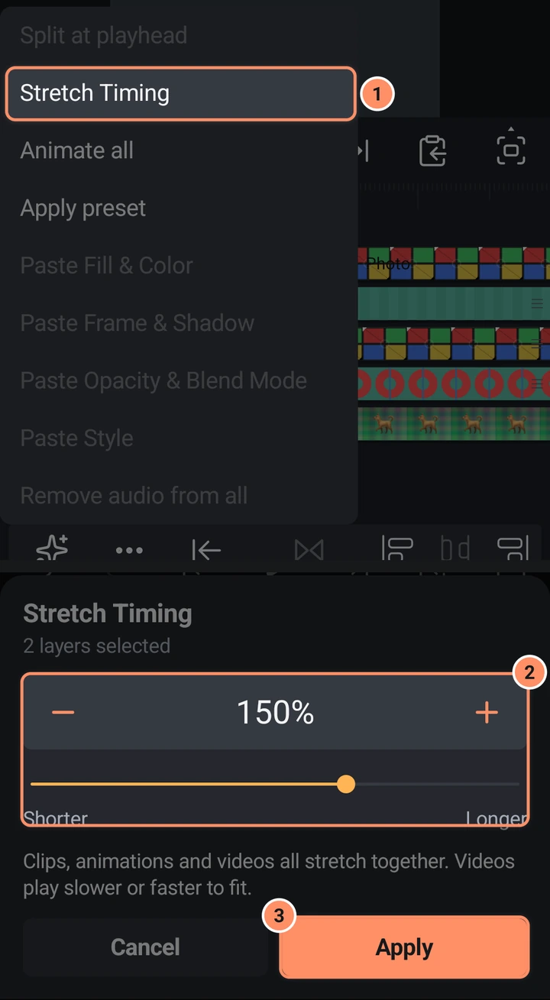

Laagmenu's en meerdere lagen selecteren
Het laagmenu, het menu voor kopiëren en plakken, en alles wat je met meerdere lagen tegelijk kunt doen.
Het laagmenu
Selecteer één laag en tik rechts in de bovenbalk op de drie puntjes (Laagmenu).
- Opslaan in Mijn assets bewaart de laag of groep als asset. Zie Assets, sjablonen en voorinstellingen.
- Horizontaal spiegelen en Verticaal spiegelen.
- Uitsnijden (foto's en video's) opent het paneel Uitsnijden. Zie Laagtools.
- Aan canvas aanpassen schaalt de laag gelijkmatig tot hij binnen het canvas past. Canvas vullen schaalt hem gelijkmatig tot hij het canvas bedekt. Uitrekken tot canvas rekt hem uit tot precies het canvas.
- Uitknipmasker maken knipt deze laag bij tot de vorm van de laag er direct onder. Uitknipmasker opheffen maakt dat weer ongedaan.
- Groep opheffen (groepen) zet de lagen van de groep terug in het project. Zie Vormen, tekenen en maskers.
- Omzetten naar contour maakt van tekst of een parametrische vorm een bewerkbaar pad. Tekst verliest daarbij de tekstinhoud en de lettertype-instellingen.
- Audio extraheren (alleen video's) voegt een audiolaag toe met het geluid van de video en zet de video op stil.
- Beweging tracken (alleen video's). Zie Bewegingstracking.
- Beats markeren (lagen met geluid) zet bladwijzers op de beats. Audiolagen hebben dit ook als tegel in hun tools. Zie Audio.
- Media-info (foto's en video's) toont naam, afmetingen, framesnelheid, duur, formaat en grootte. Mediabestand vervangen vervangt dat bestand in elke laag die het gebruikt.
- Onderaan een rij labelkleuren.

Audiolagen hebben een korter menu. Onderdelen die niet voor de laag gelden, zijn grijs.
Het menu voor kopiëren en plakken
De zesde knop van de afspeelbalk.
- Alle lagen selecteren start een selectie van meerdere lagen.
- Laag dupliceren maakt een kopie direct boven het origineel, met de naam "naam kopie". Zijn er meerdere lagen geselecteerd, dan worden ze allemaal gedupliceerd.
- Voorinstelling opslaan bewaart de look van de laag. Zie Assets, sjablonen en voorinstellingen. Dit kan alleen als de laag iets heeft dat het bewaren waard is.
- Laag kopiëren (met de stijl) kopieert de laag, de effecten en de keyframes. Het klembord staat alleen in het geheugen en is weer leeg als je de app sluit.
- Laag plakken plakt bij de afspeelkop. Bij meerdere lagen begint de vroegste bij de afspeelkop en houden de andere hun afstand.
- Stijl plakken heeft vier onderdelen: Vulling en kleur plakken, Rand en schaduw plakken, Dekking en overvloeimodus plakken en Stijl plakken (alle drie), van de laatst gekopieerde laag naar de geselecteerde laag.

Meerdere lagen selecteren
Houd het oog of de naam van een laagrij ingedrukt en schuif omhoog of omlaag over de rijen om een reeks te selecteren. Daarna voegt een tik op een rij die rij toe of haalt hem weg. Begin je het schuiven op een rij die al geselecteerd is, dan wordt de reeks juist gedeselecteerd.
De bovenbalk krijgt een andere kleur en toont:
- Selectie annuleren (X) en het aantal geselecteerde lagen.
- Groeperen zet de lagen in één groepslaag die even lang duurt als de lagen erin. Groeperen en maskeren en Groeperen en uitsluiten doen hetzelfde en zetten de overvloeimodus van de bovenste laag op Masker of Uitsluiten.
- Koppelen aan bovenliggende laag koppelt elke geselecteerde laag aan één laag die je kiest (of aan geen). Elke laag blijft op het scherm staan waar hij staat. Lagen waaraan de gekozen bovenliggende laag al gekoppeld is, worden overgeslagen.
- Geselecteerde lagen verwijderen.
- Uitlijningsopties (een pijltje) opent Links uitlijnen, Horizontaal centreren, Rechts uitlijnen, Boven uitlijnen, Verticaal centreren, Onder uitlijnen, Verticaal verdelen en Horizontaal verdelen (drie of meer lagen). Eén laag wordt uitgelijnd op het canvas; meerdere lagen op het kader rond de selectie.
Een tweede balk onderaan het scherm werkt met de timing:
- Effecten opent een klein menu. Effect aan alle toevoegen opent de Effectenbibliotheek en voegt het effect dat je kiest toe aan elke geselecteerde visuele clip. Alle effecten plakken plakt de effecten die je in het paneel Effecten van een laag hebt gekopieerd op elke geselecteerde visuele clip; zolang je niets hebt gekopieerd, is dit grijs. Geluids-, camera- en null-lagen worden overgeslagen, en een melding vertelt je hoeveel.
- Meer acties (drie puntjes) opent een tweede menu. Splitsen bij afspeelkop knipt in één stap elke geselecteerde clip waar de afspeelkop op staat in tweeën. Timing uitrekken maakt alle geselecteerde clips samen langer of korter: kies een percentage (150% maakt ze anderhalf keer zo lang) en tik op Toepassen. De animaties rekken mee en video's spelen langzamer of sneller af zodat ze passen; de vroegste geselecteerde clip houdt zijn begin. Alles animeren opent de animaties voor In, Uit en Lus en geeft de animatie die je kiest aan elke geselecteerde visuele laag. Voorinstelling toepassen opent je bewaarde voorinstellingen en past de gekozen voorinstelling toe op elke geselecteerde laag. Beide maak je in één stap ongedaan, en een melding vertelt hoeveel lagen het kregen. Vulling en kleur plakken, Rand en schaduw plakken, Dekking en overvloeimodus plakken en Stijl plakken zetten de look van de laatst gekopieerde laag op elke geselecteerde laag; ze zijn grijs tot je Laag kopiëren hebt gebruikt. Audio uit alle verwijderen zet het volume van elke geselecteerde video op nul.
- Begin van clips naar afspeelkop of Einde van clips naar afspeelkop
- Begin bijsnijden, Splitsen bij afspeelkop en Einde bijsnijden werken op elke geselecteerde clip waar de afspeelkop op staat. Eindigen sommige geselecteerde clips vóór de afspeelkop, dan wordt Einde bijsnijden Einde verlengen tot de afspeelkop en rekt die clips uit tot daar, zodat elke geselecteerde clip bij de afspeelkop eindigt. Video's stoppen aan het eind van hun beeldmateriaal.
- Overgang tussen de twee clips toevoegen (twee visuele clips die overlappen of elkaar raken). Zijn er meer dan twee clips geselecteerd, dan komt de overgang die je kiest op elke knip tussen die clips. Handig voor automatische ondertitels die direct achter elkaar staan. Zie Overgangen en animaties.
- Begin van clips uitlijnen, Einde van clips uitlijnen en Begin van clips verdelen (drie of meer).




Op de tijdlijn toont elke geselecteerde clip zijn bijsnijgrepen. Sleep je de greep van een ervan, dan verschuift hetzelfde uiteinde van elke geselecteerde clip. Elke clip stopt bij zijn eigen grens, en het hele slepen is één stap ongedaan maken.
Een groep maak je door meerdere lagen te selecteren en te groeperen. Wil je later de lagen in een groep veranderen, selecteer de groep dan en tik op Groep bewerken; zie Vormen, tekenen en maskers. Wil je een groep veranderen die uit een asset is ingevoegd, open dan het originele asset.